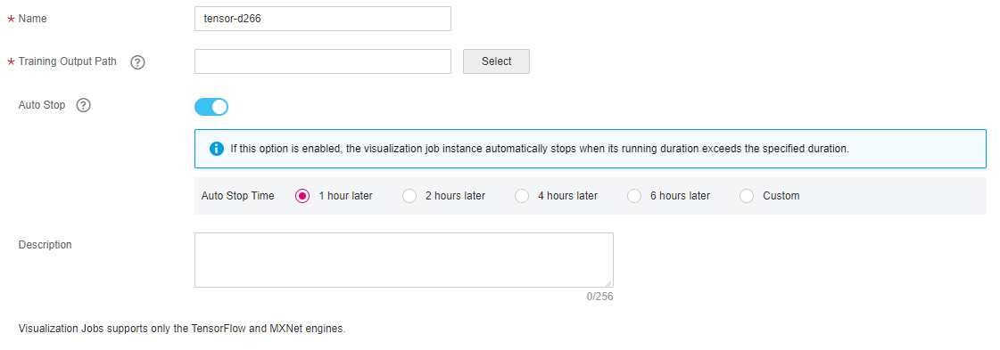
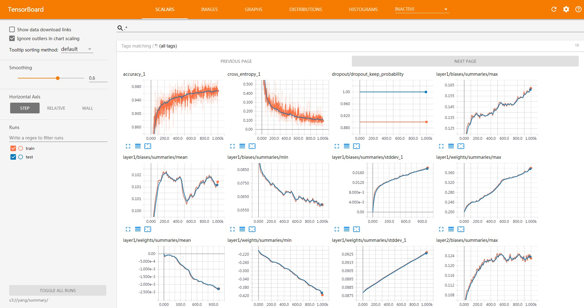

You can create visualization jobs of TensorBoard and MindInsight types on ModelArts.
TensorBoard supports training jobs based on the TensorFlow engine, and MindInsight supports training jobs based on the MindSpore engine.
TensorBoard and MindInsight can effectively display the change trend of a training job and the data used in the training.
You can use the summary file generated during model training to create a visualization job.
Prerequisites
To ensure that the summary file is generated in the training result, you need to add the related code to the training script.
- Using the TensorFlow engine:
When using the TensorFlow-based MoXing, in mox.run, set save_summary_steps>0 and summary_verbosity≥1.
If you want to display other metrics, add tensors to log_info in the return value mox.ModelSpec of model_fn. Only the rank-0 tensors (scalars) are supported. The added tensors are written into the summary file. If you want to write tensors of higher ranks in the summary file, use the native tf.summary of TensorFlow in model_fn.
- Using the MindSpore engine:
MindSpore allows you to save data to the summary log file and display the data on the GUI. For details, see the MindSpore official website.
Creating a Visualization Job
- Log in to the ModelArts management console. In the left navigation pane, choose Training Jobs. On the displayed page, click the Visualization Jobs tab.
- In the upper left corner of the visualization job list, click Create to switch to the Create Visualization Job page.
- Set Job Type to TensorBoard and MindInsight. Enter the visualization job name and description as required, set the Training Output Path and Auto Stop parameters.
- Training Output Path: Select the training output path specified when the training job is created.
- Auto Stop: Enable or disable the auto stop function. The options are 1 hour later, 2 hours later, 4 hours later, 6 hours later, and Custom. If you select Custom, you can enter any integer within 1 to 24 hours in the textbox on the right.
Figure 1 Creating a visualization job
 - Click Next.
- After confirming the specifications, click Next.
In the visualization job list, when the status changes to Running, the virtualization job has been created. You can click the name of the visualization job to view its details.
Opening a Visualization Job
In the visualization job list, click the name of the target visualization job. The TensorBoard page is displayed. Only the visualization job in the Running status can be opened.

Running or Stopping a Visualization Job
- Stopping a visualization job: You can stop a running visualization job to stop billing when it is no longer needed. In the visualization job list, click Stop in the Operation column to stop the visualization job.
- Running a visualization job: You can run and use a visualization job in the Canceled status again. In the visualization job list, click Run in the Operation column to run the visualization job.
Deleting a Visualization Job
If your visualization job is no longer used, you can delete it to release resources. In the visualization job list, click Delete in the Operation column to delete the visualization job.

A deleted visualized job cannot be recovered. You need to create a new visualization job if you want to use it. Exercise caution when performing this operation.